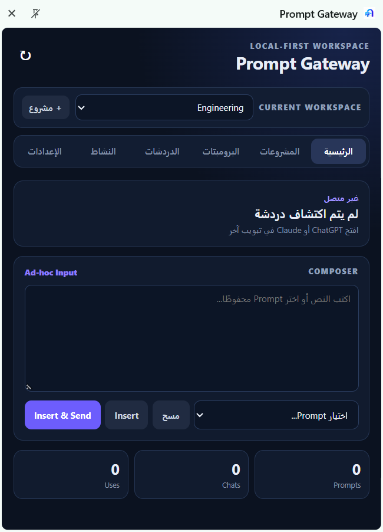
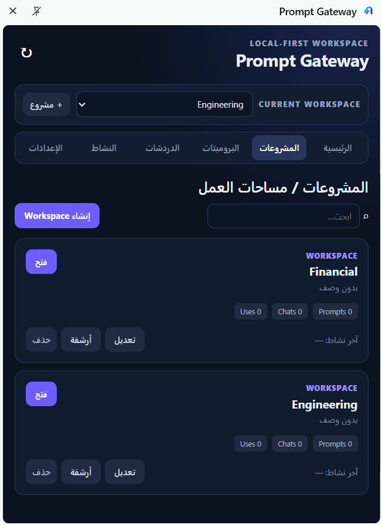
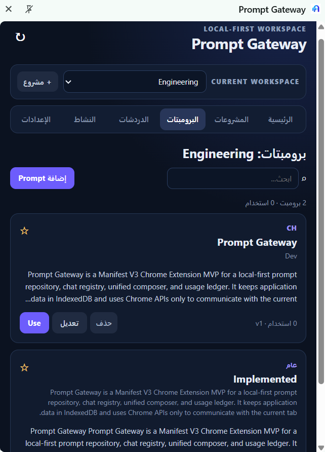
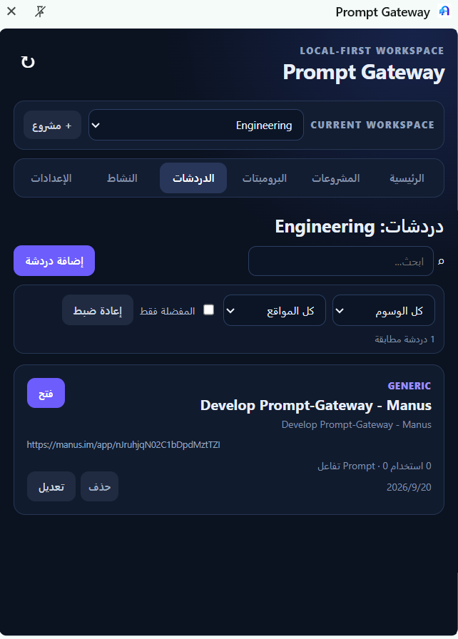
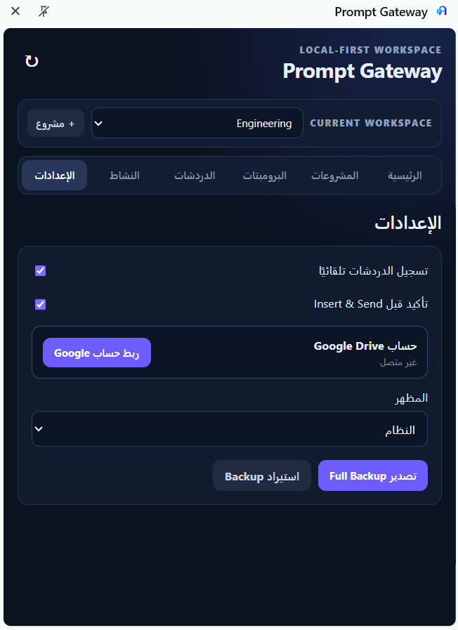

01
Build your prompt library
Create, edit, search, tag, favorite, and version prompts so the best instructions are always ready when you need them.
Explore the library →Local-first Chrome extension
Prompt Gateway brings your prompt library, chats, workspaces, and usage history into one focused Chrome side panel.
Everything in context
Stop searching through scattered notes and repeating the same instructions. Prompt Gateway turns your reusable knowledge into a practical workflow.
Create, edit, search, tag, favorite, and version prompts so the best instructions are always ready when you need them.
Explore the library →Group prompts and chats by client, project, or workflow without duplicating the underlying data.
See workspaces →Insert a selected prompt into supported ChatGPT, Claude, and generic web composers from the side panel.
View development guide →Review usage and interaction history in the current workspace to understand what is working.
How data is handled →See it in action
These are real Prompt Gateway screens from the current product build. Explore the workspace, prompt library, chat registry, and settings views.





Privacy by design
Prompt Gateway stores prompts, chats, workspaces, settings, and history locally in your browser by default. There is no advertising layer, analytics, or application backend.
Google Drive synchronization is optional. When enabled, it uses a private application-data folder and does not access ordinary Drive files or folders.
Read the privacy guide →Ready when you are